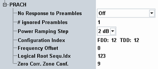

The following parameters configure settings related to the random access procedure.

By default the signaling application responds to received preambles, so that the UE can perform an attach. Alternatively, received preambles can be ignored (no response), so that the UE continues to send preambles and PRACH measurements can be performed (included in R&S CMW-KM500/-KM550).
"Off" | The signaling application responds to received preambles. |
"On" | Any received preambles are ignored by the signaling application (no response). |
"# Ignored Preambles" | The number of preambles to be ignored by the signaling application is configured via parameter "# Ignored Preambles". Subsequent preambles are answered. This value can only be selected if parameter "Power Ramping Step" is set to 0 dB. |
Specifies the transmit power difference between two consecutive preambles. This value is broadcasted to the UE.
If you set the step size to 0 dB, the preamble power is kept constant by the UE. Thus you can use a constant expected nominal power setting during a PRACH measurement.
Remote command:Sets the PRACH configuration index. It defines the preamble format and other PRACH signal properties, e.g. which resources in the time domain are allowed for transmission of preambles. This value is broadcasted to the UE.
There are separate settings for FDD and TDD (if both R&S CMW-KS500 and R&S CMW-KS550 are available). The values allowed for TDD depend on the UL-DL configuration as listed in the command description.
For details, see 3GPP TS 36.211, section 5.7.1 "Time and frequency structure".
If you enable eMTC, the FDD configuration index is set to 3.
Remote command:The frequency offset is used by the UE to calculate the location of the preamble resource blocks within the cell bandwidth. The value is broadcasted to the UE.
For details, see "prach-FrequencyOffset" in 3GPP TS 36.211, section 5.7.1 "Time and frequency structure".
Remote command:Specifies the logical root sequence index to be used by the UE for generation of the preamble sequence. The value is broadcasted to the UE as RACH_ROOT_SEQUENCE.
For details see 3GPP TS 36.211, section 5.7.2 "Preamble sequence generation".
Remote command:The zero correlation zone config determines which NCS value of an NCS set has to be used by the UE for generation of the preamble sequence. The value is broadcasted to the UE.
For details, see "zeroCorrelationZoneConfig" in 3GPP TS 36.211, section 5.7.2 "Preamble sequence generation".
Remote command: